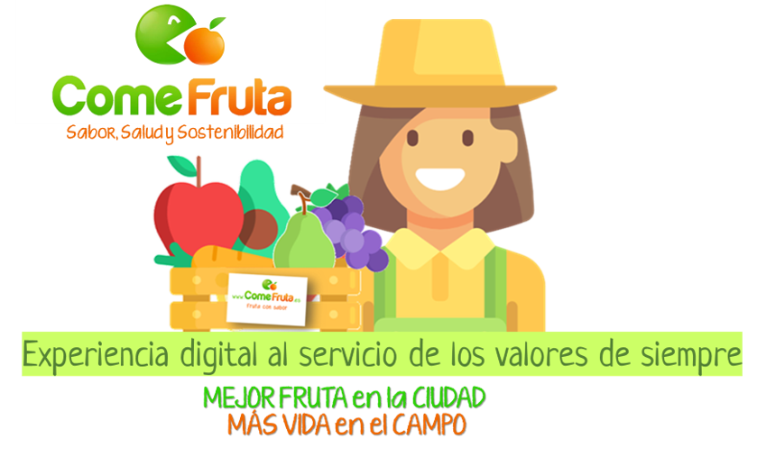

Cónocenos
Somos profesionales con corazón, que acercamos el campo a la ciudad trabajando de forma justa y sostenible. Ponemos lo digital al servicio de tu salud, para que disfrutes de la fruta con más sabor en tu casa o en tu oficina.
¿EN QUÉ CREEMOS?
Ponemos en valor lo más cercano conectando el campo y la ciudad. Llevamos las frutas y verduras con más sabor directamente del árbol a tu mesa.
Queremos que todos ganen. Apostamos por una agricultura más sostenible, una retribución más justa a agricultores y transportistas,
unos hábitos más saludables en familias y empresas y un equipo que trabaja libre, feliz y responsable.
Nuestra mentalidad es digital y nuestras manos artesanas
Somos especialistas en fruta, en logística y en comercio electrónico. Conjugamos mimo con mediciones. Eficiencia y
optimización constante con escucha e imaginación.
Nunca dejamos de mejorar para que todos ganen.
En 2011 nace un sueño.
Jose Luis funda ComeFruta para conectar el campo y la cuidad, llevando la mejor fruta con todo el sabor del árbol a tu mesa.
ComeFruta surge del empeño de Jose Luis Montesino, hasta entonces gerente en Telefónica, de trabajar de una forma diferente.
Jose Luis tenía ganas de restar horarios, atascos y jefes. Pero, sobre todo, tenía una enorme vocación de sumar a su vida
acciones en pro de sus valores. Y a su proyecto, personas que quisieran ser útiles a los demás trabajando cómo y en lo que
de verdad les gustara. Descontento al ver cómo una gran parte de las frutas y verduras de la mejor calidad que producía su
explotación familiar del campo de Tarragona se iban al extranjero a través de mayoristas, se lanzó con un proyecto que conectara
lo rural con lo urbano preservando todo el sabor. Y como buen ingeniero, comenzó en solitario “a enredar” con una tienda online
para vender sus propias naranjas, manzanas, peras y tomates en las mismas cajas que se utilizaban para la recogida.
Desde entonces, gracias a su afición por el comercio online y a sus ganas de servir a su gente, hoy ComeFruta es un equipo de
10 personas que sirven fruta y verdura a diario a más de 5.000 clientes en casas y oficinas. Contribímos a crear, a golpe de clic,
espacios de bienestar y salud en personas y empresas. Y nos lo pasamos en grande trabajando en lo que nos gusta y haciéndolo cada
uno en el formato que mejor le viene.